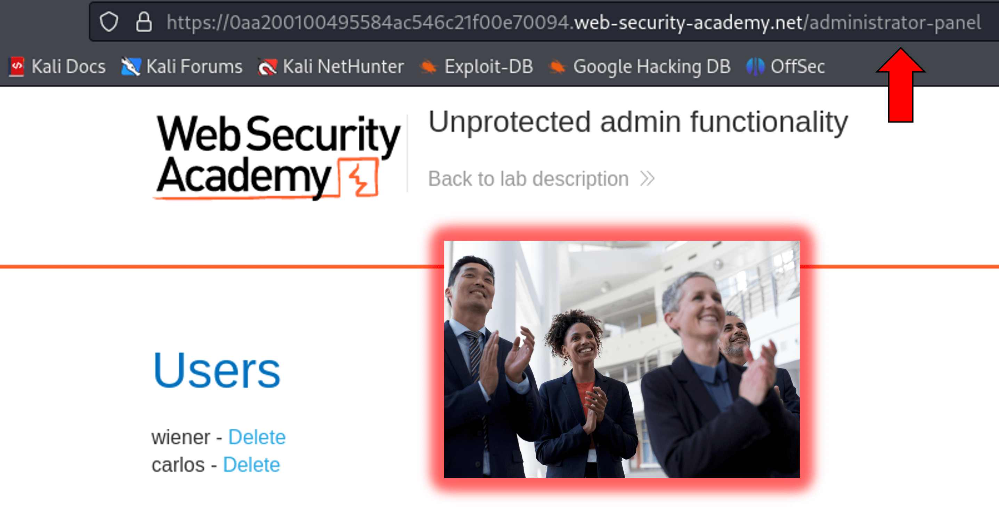
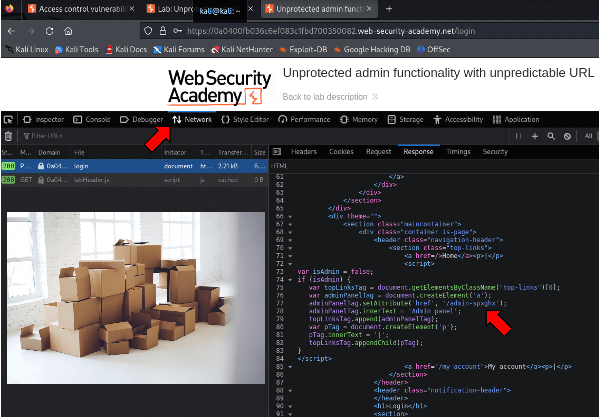
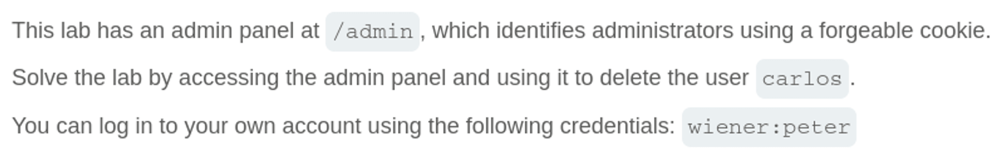
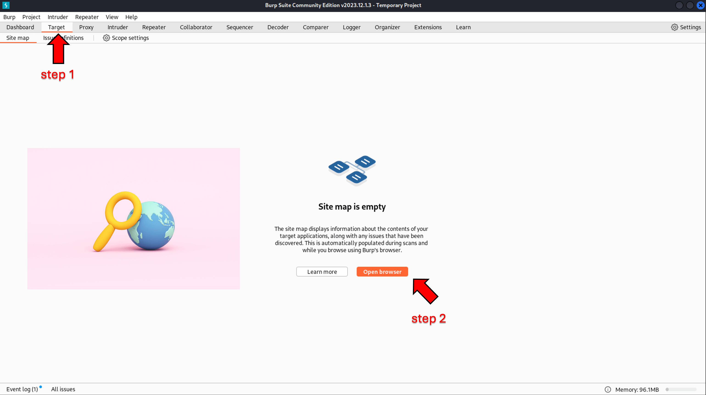
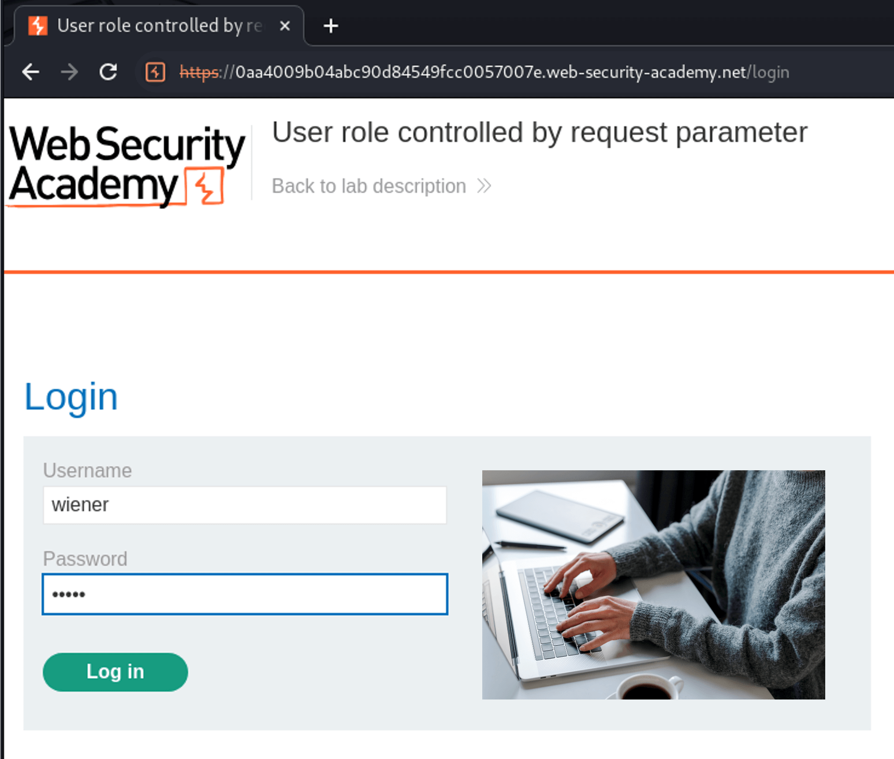
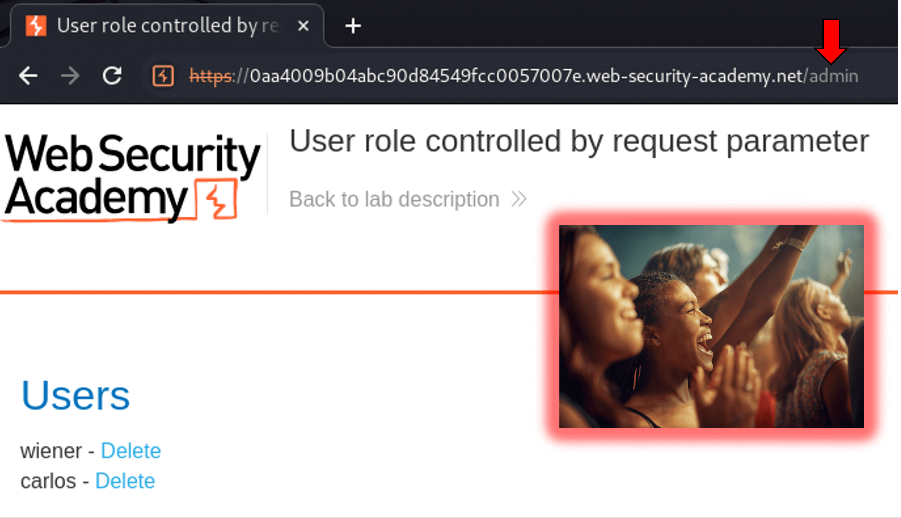
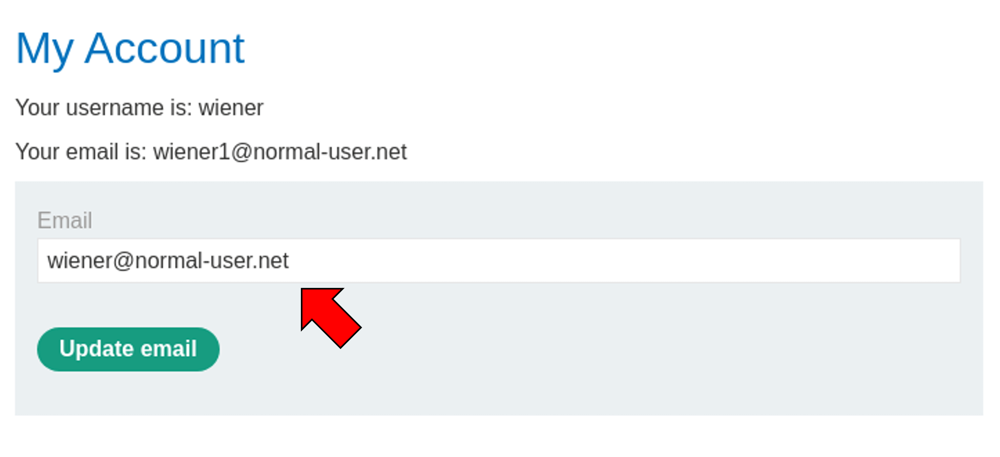

There are many ways a web application may be vulnerable to attack.
In this tutorial, we present some examples to illustrate vulnerabilities in
the way websites authenticate their users.
If you wish to follow along, the vulnerable websites shown here were created
and hosted by PortSwigger.net, the creator of Burp Suite.
PortSwigger Web Security Academy
When looking for web app vulnerabilities, we often start without credentials.
Bypassing the login altogether, when possible, is a great start.
The robots.txt file can sometimes expose sensitive information.
It is used by website owners to communicate with search engines and tell them which parts not
to crawl. Useful data can sometimes be found here, including sensitive or hidden
directories or files.
Parse these directories, test pages and old website versions for sensitive data.
In this vulnerable webserver we find a hidden directory for an admin portal.
Navigating to the admin portal in this way bypasses the login entirely and gives us access to
the administrator action of deleting users!

Sensitive information can also be found in the network traffic sent to and from the webserver.
Burp Suite is a useful tool for intercepting network traffic to better understand a site.
Here, we open a Chromium browser hosted by the Burp Suite session and navigate to our target.
Attempt to log in to the My account portal on the website.
Return to the Burp Suite Target window and view the /login response.
Look through the Response script for sensitive information left in by the web developers.
Here we can see an admin panel tag attribut in plain text that appears to be a directory
Next we should navigate to the address to see where it takes us.
Navigating to the directory we found in the login response takes us to the admin panel,
bypassing the login entirely and giving us access to the administrator action of deleting users!
We can also view network traffic without installing tools like Burp Suite.
Browsers provide powerful tools, often called Web Developer Tools, within the browser itself.
Here, we navigate to the menu, more tools, where we find the Web Developer Tools option.
Follow the same steps to attempt login.
Navigate to the Network tab of the Web Developer Tools menu and find the login packet response.
Here you will see the same script we reviewed in Burp Suite which shows the admin panel directory in plain text.
Note: the directory name is different each time the lab is opened.

In this scenario, we have been given low-level user credentials without administrator rights.
Even though we can log in, we need to find a way to elevate our priveleges.

Another powerful tool in web development and operation is the cookie.
A cookie is a small piece of data web browsers use to store and retrieve information.
They can provide a faster and more personalized experience for the user.
With this conveniece comes risk. Cookies can be used to keep users logged in, remember login
credentials, track user behavior across websites and more. This data should be carefully guarded.
We start by opening the website in Burp Suite browser.

This time we navigate to the Proxy tab of Burp Suite to enable packet interception.
With the proxy, we are able to review and make changes to packets before they are sent to the web.
Enter the user login credentials and click log in. You will notice nothing happens in the browser.
This is because the Burp Suite proxy is intercepting the action. Return to Burp Suite.

Burp Suite displays the details of the request packet and allows changes before forwarding to the web.
Notice that there is a session cookie attribute of Admin which is set to false.
Here we can find vulnerabilities in how cookies are handled that may allow us to manually update the value.
Change the value of Admin to "true" from "false".
Forward the request packet to the web to log in using the credentials and cookie value of Admin=true.
This may require clicking Forward multiple times depending on how many packets are needed
Return to the Burp Suite Chromium browser window.
Now that we are logged in, we can navigate to /admin address to access the admin panel.
Changing the cookie has granted access to the administrator panel and the action of deleting users!

The last technique we will review is network packet analysis.
First, open a Chromium browser window in Burp Suite.
Next, turn on Intercept from the Proxy tab in Burp Suite to capture traffic.
Note: after turning on Intercept, any action you take in browser has to be forwarded from this window.
After logging in with the provided credentials, navigate to My Account link.
Here we have the opportunity to edit account detail: email address.
Enter an email address to update the account, then return to Burp Suite.

In the Proxy tab, you should see the contents of the Request (GET) packet you sent to update the email.
Note the email address you entered is at the bottom in JSON format.
JSON (JavaScript Object Notation) is a common data format to store and transmit data.
Right click to open the menu and select Send to Repeater.
The Repeater Burp Suite tool allows us to change our request and see what the response will be.
When we send our request, we receive a Response packet that contains additional account details.
Username, apikey, and roleid are user details we were not aware of previously.
Take special note of roleid, which is a variable of unspecified significance.
As we are trying to elevate the priveleges (role) of our account, we may be able to use this to become an admin.
Try changing roleid by including it with the email field in your Request packet.
Note: in JSON format, the fields must be separated by a comma.
After sending, you will notice that the roleid has changed in the Response.
It appears that we've found a vulnerability in how the server handles user validation!
Next we must send the actual Request packet to the website. Navigate back to the Proxy tab.
Add the roleid field to the JSON message and update it to a number other than 1.
Forward the package to the website and return to the browser.
If you've successfully updated the roleid to 2 from 1, you should be able to navigate to the admin panel.
Changing the roleid has granted access to the administrator panel and the action of deleting users!
In this tutorial we have reviewed various simple techniques for identifying and exploiting web authentication vulnerabilities.
It is very important to be very thorough when designing and maintaining websites as they are open to the public.
The internet is a very wide attack surface. Hosting sensitive information opens you to great risk, so take great care!
I hope you have learned something new and enjoyed your time in this tutorial. If so, please check back later, as additional
content will be posted as it becomes available!